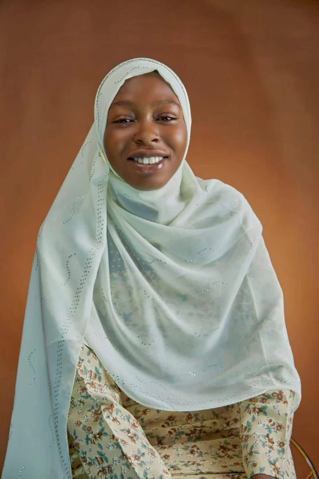

A little about Muneerah.
The person behind the campaigns, the communities and the everyday conversations.

Hi, I’m Muneerah.
Community builder. Digital marketer. Curious listener. I care about creating useful conversations and meaningful outcomes for the people behind the metrics.
Let’s connect ↗I believe good marketing starts long before a sale. It starts when someone feels heard, understood and welcomed.
My name is Muneerah Muhammad Thalith. My background is in independent digital marketing, affiliate sales and community-led learning, with hands-on experience supporting audiences through Telegram, WhatsApp and social channels.
From growing online groups to guiding new learners and promoting digital products, I have learned that useful communication creates stronger outcomes than noise. In March 2026, my work earned the No. 1 affiliate recognition on LearnerFlex, with over 600 sales that month.
I'm now looking to bring that practical experience into a team where thoughtful support, reliable moderation, healthy communities and meaningful growth matter. I'm particularly interested in remote opportunities in technology, Web3 and digital products.
I value clarity, curiosity, patience and consistency — and I am always learning.
Skills rooted in actual practice.
Responding to questions, encouraging participation and helping people feel welcome.
Promoting offers, explaining value and supporting the journey from enquiry to conversion.
Telegram/WhatsApp group organization, announcements and member communication.
Helping newcomers understand unfamiliar workflows and digital products.